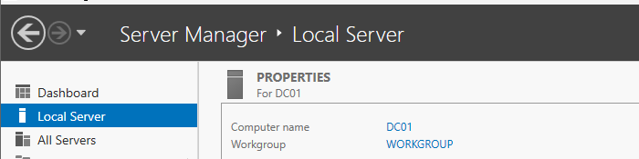

Task
Rename the Windows Server to a standardised hostname before configuring Active Directory.
Configuration
- Operating system
- Windows Server 2025
- Server name
- DC01
- Current workgroup
- WORKGROUP
Method
Renamed the computer through Server Manager → Local Server → Computer Name → System Properties. The default Windows-generated hostname was replaced with DC01, and the server was restarted to apply the change.
PowerShell equivalent
Rename-Computer -NewName DC01 -RestartDocumentation
Renamed the Windows Server to DC01 to establish a clear naming convention before installing Active Directory Domain Services and promoting the server to a Domain Controller.
Verification
Confirmed after the restart that Server Manager → Local Server displayed the computer name as DC01.
Evidence
